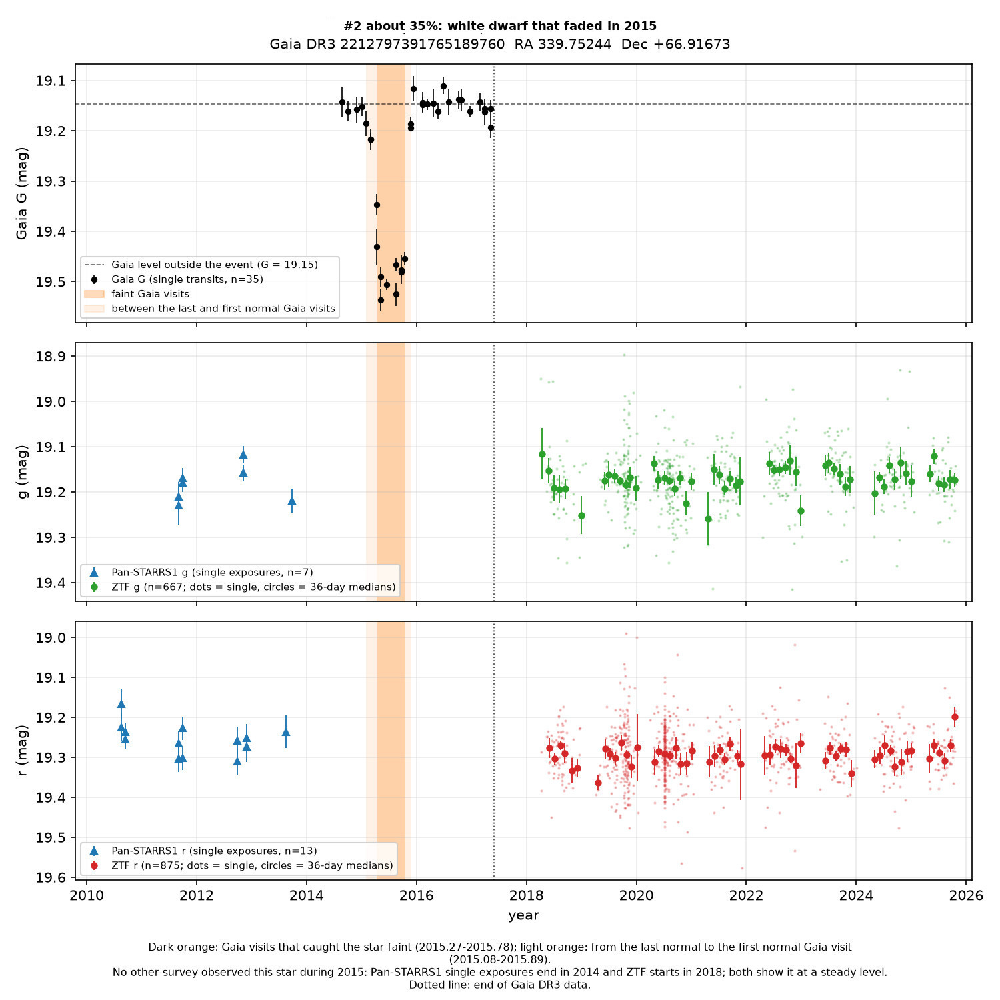
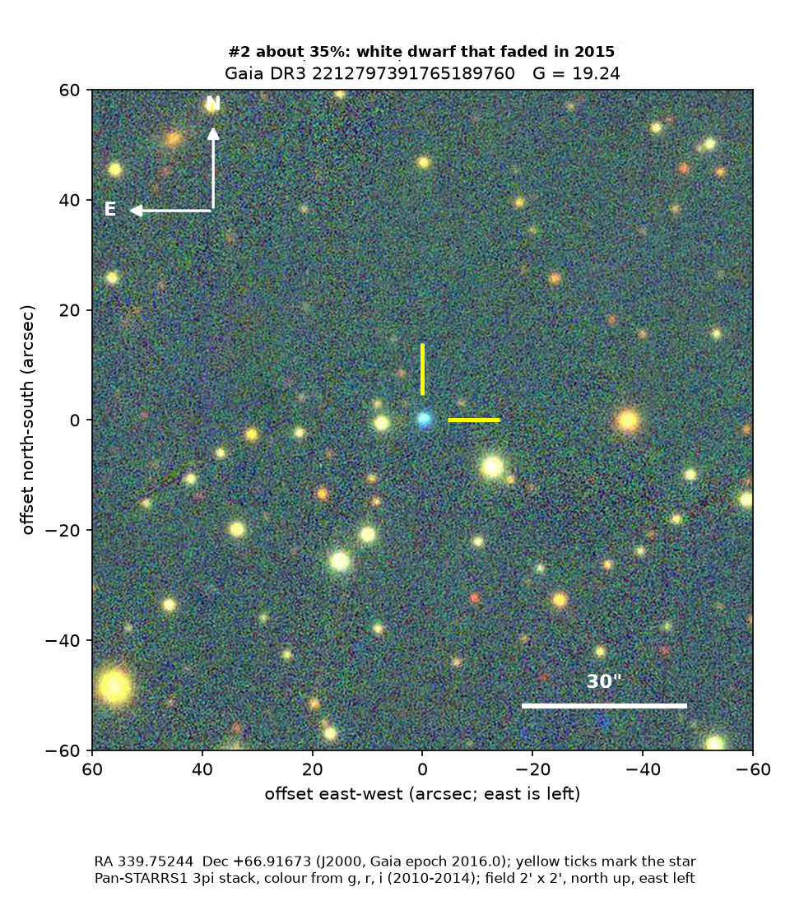

Professor of Mathematics
Paata Ivanisvili
Department of Mathematics, University of California, Irvine

Candidate 2: a white dwarf that faded for eight months
Why this estimate. Only Gaia observed the dip. An earlier Gaia data release only reprocesses the same observations, and no other measurement from 2015 exists, so an unrecognised instrumental artefact remains possible, even though every available test for artefacts came out clean.
How to read the pictures. The finder chart shows a patch of sky two arcminutes across, about a fifteenth of the Moon’s width, with north up and east to the left. The star sits between the two yellow ticks, and the white bar is 30 arcseconds long. On a light curve the vertical axis is magnitude, a brightness scale on which larger numbers mean fainter stars, and it is drawn so that down means fainter. Orange shading marks the change. Each survey uses slightly different filters, so each is compared with its own normal level.

What changed. The star is a white dwarf in Cepheus: the burnt-out core of a Sun-like star, about the size of the Earth. Its Gaia colours fit a hydrogen atmosphere at about 12,000 K and a mass of about 0.7 times that of the Sun. Gaia measured it 35 times between 2014 and 2017. In early 2015 it faded smoothly over about two months, stayed 0.33 magnitudes fainter, or 26 per cent less light, from May to mid-October 2015, and was back to normal less than 40 days later. Before that it was steady in Pan-STARRS from 2010 to 2014, and afterwards it was steady in Gaia from 2016 to 2017 and in ZTF from 2018 to 2025.
As far as is known, no other survey observed the star during 2015, so there is no picture of it while it was faint. Pan-STARRS1 stopped routine imaging in 2014 and ZTF started in 2018, while the Dark Energy Camera and SkyMapper do not cover this part of the sky. The dip is covered by 10 Gaia measurements in 6 visits.
Why it might matter. White dwarfs almost never change brightness like this. A fading of a quarter of the light, nearly the same at all colours and lasting most of a year, could mean that a large dusty body or a cloud of debris passed in front of the star. Other explanations are not ruled out, and the strongest test, a second telescope seeing the same dip, is missing.
SIMBAD, VSX (the variable-star index) and the Gaia alerts list show nothing known about the star. Gaia’s artefact indicators are normal, there is no other Gaia source within 6 arcseconds, and Gaia’s two telescopes agree to 0.01 magnitudes. Gaia’s previous data release, processed separately and including data up to May 2016, has the star fainter on average by the amount the 2015 dip predicts. Nearby stars did not dip.
- Star
- Gaia DR3 2212797391765189760, a white dwarf
- Location
- RA 339.75244°, Dec +66.91673° (J2000), in Cepheus
- Distance
- about 270 parsecs (880 light-years)
- Brightness
- Gaia G = 19.2
- Probability
- This candidate is unconfirmed. The percentage under the title is an estimate of the chance that it is a real, previously unrecorded case of the kind described. The estimate has not been checked by outside experts. See the introduction to all twelve candidates.
- Caveat
- Only Gaia saw the event, so independent confirmation, the strongest test, is not available.
